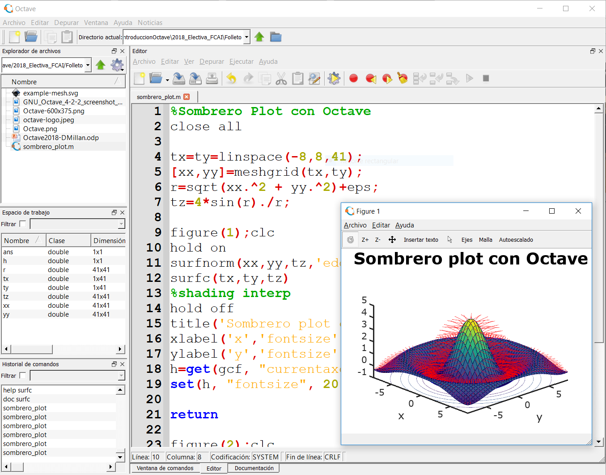

Objetivos
- Manejar funcionalidades y órdenes básicas en lenguaje de programación m de Octave/Matlab para trabajar con listas de números, vectores, matrices, funciones, realizar gráficas de funciones y lectura de archivos de datos.
- Comprender el proceso computacional involucrado en la creación y ejecución de programas en guiones (scripting) desde la ventana de órdenes o desde el editor.
- Adquirir conocimientos y habilidades básicas en el uso de lenguaje "m" de Octave/Matlab para resolver problemas simples de computación científica en ingeniería.
Programa
- Reseña histórica sobre cálculo computacional. Experimentos "in vivo", "in vitro" e "in silico". Cálculo avanzado en ingeniería, mecánica computacional, problemas de interés, etcétera. ¿Qué es un sistema operativo? Historia de Unix. Arquitectura del SO Linux. GNU Octave.
- Recreo 20 min.
- Octave$> Entorno de trabajo. Escritorio. Directorio Actual. Ventana de órdenes. Explorador de archivos. Espacio de trabajo. Historial de órdenes. Primer paso “Hola Mundo”.
- Se resolverá un problema de ingenio de forma colaborativa: la nave espacial y los 2 recipientes de antimateria oscura.
- Recreo 20 min.
- Clase práctica tutelada resolviendo ejercicios de la Guía de Ejercicios 1. Operaciones aritméticas básicas con números reales mediante líneas de órdenes: suma, resta, producto, división.
- Archivos que contienen un guión de órdenes (script). Creación y edición de un script. Ejecución de scripts. Resolución de problemas aritméticos simples empleando scripts.
- Se presentará un problema de ingenio a resolver de forma colaborativa: edades de los hijos de un matemático.
- Recreo 20 min.
- Graficar en Octave curvas planas empleando ezplot. Añadir líneas a un gráfico ya existente. Modificar título y nombre de los ejes. Órden subplot: múltiples gráficas en la misma figura.
- Resolución de un problema de interés en ingeniería: cadena suspendida de sus dos extremos y sometida a un campo gravitatorio uniforme.
- Recreo 20 min.
- Clase práctica tutelada resolviendo ejercicios. El foco se pondrá sobre la utilidad de emplear una PC para cálculos simples y graficar resultados.
- Definición de listas de números como arreglos: vectores/matrices. Operaciones con vectores/matrices (min, max, sort). Operadores aritméticos. Tipos de matrices predefinidos.
- Carga de datos y su representación gráfica empleando la función plot. Estilos de línea y marcadores en la función plot. Guardar e imprimir figuras.
- Recreo 20 min.
- Resolución de problemas de interés en ingeniería: (1) brazo tensionado, (2) sistema de reactores químicos.
- Recreo 20 min.
- Clase tutelada resolviendo ejercicios. El foco se pondrá sobre la utilidad de emplear una PC para cálculos simples pero exhaustivos, graficar resultados y exportar figuras.
- Nociones de programación estructurada. Definición de funciones de usuario. Funciones inline, funciones anónimas. Declaraciones de control: if ... else; switch; for; while.
- Recreo 20 min.
- Resolución de problemas de interés en ingeniería: (1) brazo tensionado, (2) sistema de reactores químicos.
- Recreo 20 min.
- Clase práctica tutelada resolviendo ejercicios. Cálculos de ingeniería simples pero exhaustivos, foco en la carga de datos y representación gráfica de resultados.
- En el último módulo de la práctica de octave se realizará la toma de datos y procesamiento en tiempo real. Se combinarán tecnologías desarrolladas en la carrera de Ingeniería Mecánica, para la obtención de mediciones en tiempo real, con las habilidades adquiridas por los alumnos durante el curso para su procesamiento. Se busca familiarizar al estudiante con conceptos de análisis de datos moderno usando un enfoque práctico.
- En específico se plantea realizar un experimento que emula a una Incubadora de aves. Este consiste en una fuente de calor en un recipiente cerrado y varios sensores de temperatura distribuidos en su interior para determinar la curva de distribución de temperaturas. El ensayo se repite variando condiciones de convección y humedad para ver como afecta a la transferencia de calor dentro del recipiente.
- Recreo 20 min.
- Entrega de Certificados acreditando realización del curso Ingeniate en Octave y folleto de la carrera de Ingeniería Mecánica (tamaño A3, a color).
Clase 1
Clase 2
Clase 3
Clase 4
Clase 5
